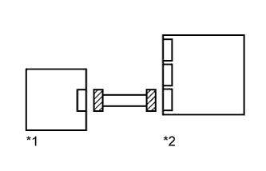

DTC B1676/85 Нарушение связи с правым задним напольным датчиком системы SRS |
DTC B1677/85 Не завершена инициализация правого заднего напольного датчика системы SRS |
| Код DTC | Условие обнаружения DTC | Неисправный участок |
| B1676/85 | Выполняется одно из следующих условий:
|
|
| B1677/85 | Выполняется одно из следующих условий:
|
|
| 1.ПРОВЕРЬТЕ ПОДСОЕДИНЕНИЕ РАЗЪЕМОВ |
Выключите зажигание.
Отсоедините провод от отрицательного (-) вывода аккумуляторной батареи и подождите не менее 90 секунд.
Проверьте правильность подключения разъемов к центральному блоку управления системы SRS и заднему боковому напольному датчику системы SRS.
|
| ||||
| OK | |
| 2.ПРОВЕРЬТЕ РАЗЪЕМЫ |
Отсоедините разъемы от центрального блока управления системы SRS и заднего бокового напольного датчика системы SRS.
|  |
Убедитесь, что разъемы со стороны центрального блока управления системы SRS и заднего бокового напольного датчика системы SRS не повреждены.
| *1 | Задний боковой датчик системы SRS |
| *2 | Центральный блок управления системы SRS |
|
| ||||
| OK | |
| 3.ПРОВЕРЬТЕ ЦЕПЬ ЗАДНЕГО БОКОВОГО НАПОЛЬНОГО ДАТЧИКА СИСТЕМЫ SRS |
Подсоедините провод к отрицательному (-) выводу аккумуляторной батареи и подождите не менее 2 секунд.
| *1 | Задний боковой датчик системы SRS | *2 | Центральный блок управления системы SRS |
| *3 | Напольный провод | *4 | Разъем C |
| *5 | Разъем B | *6 | Технологический провод |
| *a | Вид спереди разъема со стороны жгута проводов: (к заднему боковому напольному датчику системы SRS) | *b | Вид сзади разъема со стороны жгута проводов (к центральному блоку управления системы SRS) |
Измерьте напряжение в соответствии со значениями, приведенными в таблице.
| Контакты для подключения диагностического прибора | Положение переключателя | Заданные условия |
| Q5-2 (BER+) - масса | Замок зажигания в положении ON (ВКЛ) | Менее 1 В |
| Q5-1 (BER-) - масса | Замок зажигания в положении ON (ВКЛ) | Менее 1 В |
Выключите зажигание.
Отсоедините провод от отрицательного (-) вывода аккумуляторной батареи и подождите не менее 90 секунд.
С помощью технологического провода соедините контакты 15 (BCR+) и 14 (BCR-) разъема "В".
Измерьте сопротивление в соответствии со значениями, приведенными в таблице ниже.
| Контакты для подключения диагностического прибора | Условие | Заданные условия |
| Q5-2 (BER+) - Q5-1 (BER-) | Всегда | Менее 1 Ом |
Отсоедините технологический провод от разъема В.
Измерьте сопротивление в соответствии со значениями, приведенными в таблице ниже.
| Контакты для подключения диагностического прибора | Условие | Заданные условия |
| Q5-2 (BER+) - Q5-1 (BER-) | Всегда | 1 МОм или более |
| Q5-2 (BER+) - масса | Всегда | 1 МОм или более |
| Q5-1 (BER-) - масса | Всегда | 1 МОм или более |
|
| ||||
| OK | |
| 4.ПРОВЕРЬТЕ ЗАДНИЙ БОКОВОЙ НАПОЛЬНЫЙ ДАТЧИК СИСТЕМЫ SRS |
 |
Подсоедините разъемы к центральному блоку управления системы SRS.
Временно замените задний боковой напольный датчик системы SRS новым.
Подсоедините провод к отрицательному (-) выводу аккумуляторной батареи и подождите не менее 2 с.
Установите замок зажигания в положение ON (ВКЛ) и подождите не менее 60 секунд.
Сбросьте коды DTC, сохраненные в памяти (Нажмите здесь).
Выключите зажигание.
Установите замок зажигания в положение ON (ВКЛ) и подождите не менее 60 секунд.
Проверьте коды DTC (Нажмите здесь).
| *1 | Задний боковой датчик системы SRS |
| *2 | Центральный блок управления системы SRS |
|
| ||||
| OK | ||
| ||